02:00
Welcome
These slides available at: https://arcus.github.io/first_steps_in_r_rstudio_skills_series/session_1.html
- Use keyboard arrow keys to
- advance ( → ) and
- go back ( ← )
- Type “s” to see speaker notes
- Type “?” to see other keyboard shortcuts
About Arcus / Your Presenter
Arcus is an initiative by the Research Institute aimed at promoting data discovery and reuse and increasing research reproducibility.
- Arcus app: https://arcus.chop.edu
- Arcus Sharepoint site: https://chop365.sharepoint.com/sites/Arcus
Among the many teams in Arcus, I represent Arcus Education!
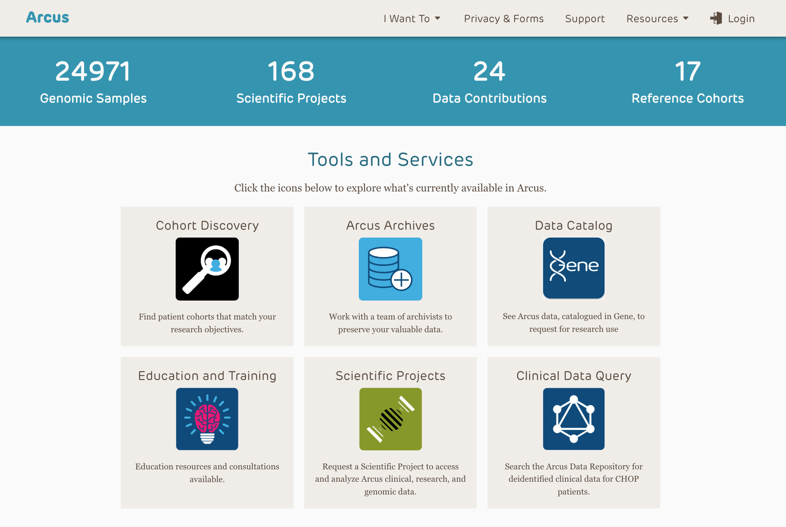
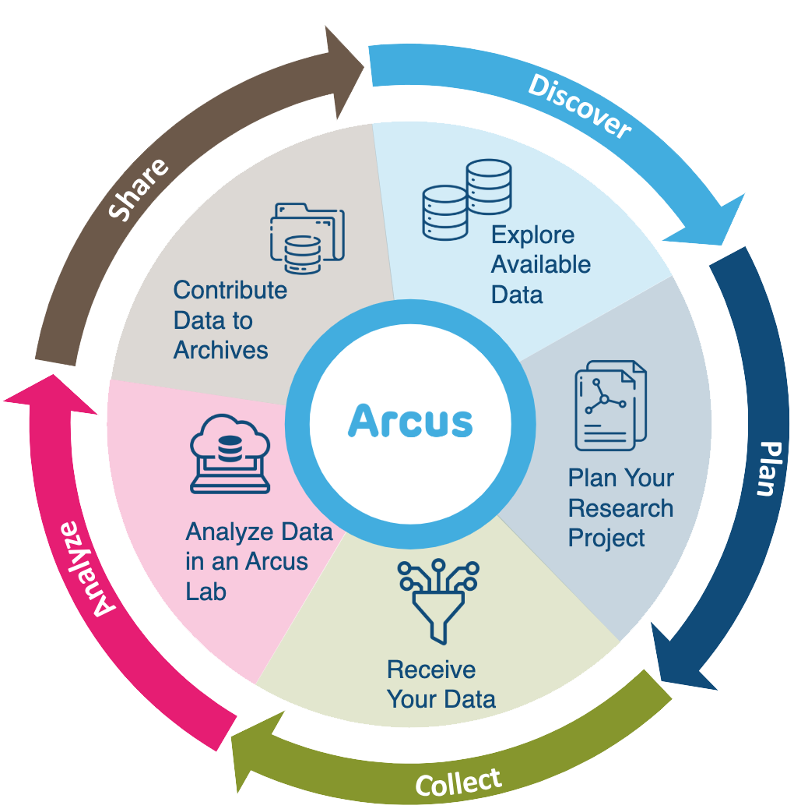
Arcus Education
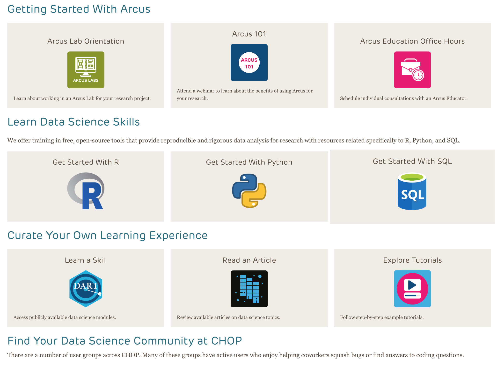
Arcus education provides data science training to researchers …
(and often this is useful to non-researchers too!).
https://arcus.chop.edu/i-want-to/arcus-education
Email us! arcus-education@chop.edu
First Steps in R and RStudio
Arcus Education provides “Skills Series” for the entire CHOP community.
This Skills Series is a 5-session series aimed at helping you take your first steps in R and RStudio!
- Session 1: Review and Setup
- Session 2: Projects and File Ingestion
- Session 3: Exploring Data Visually, Using ggplot2
- Session 4: Selecting Data Using dplyr
- Session 5: Putting it All Together: Communicating Findings
Session 1 Itinerary
Review and Setup (see also: Demystifying R and RStudio)
- Quick review of R, RStudio, and “literate statistical programming”
- Posit.cloud: our environment for this course
- Git and GitHub: Out of scope but very useful!
- Your first Quarto Document
Goals:
- Use Source and Visual views in RStudio to experiment with how markdown gets rendered into attractive and descriptive text
- Create a new code chunk in a Quarto document
- Run a code chunk in a Quarto document
R Vs RStudio

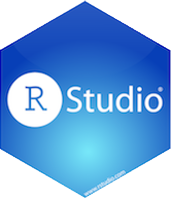
R Programming language for data analysis
RStudio Integrated development environment (IDE)
LSP Example (Quarto)
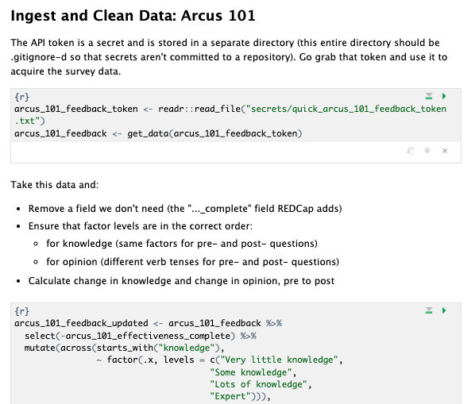
In Literate Statistical Programming, we not only use code, but also describe what we do in human language, with things like headers, bullet points, and other formatting to make it easier for humans to make sense of the code.
Posit.Cloud (for learning only!)
You can use R and RStudio using online services like https://posit.cloud. Sign up for your free account, it’s what we’ll use for this series.
Posit.cloud is a great place for learning or practice with public datasets, BUT is not a safe or compliant place to put your regulated data.
Git and GitHub Desktop: Out of scope
… but very useful version control software.
Version control allows you to track, for text-based files:
- What changed (the file name, the line numbers, the actual text)
- When (date and time)
- By whom (username / ID)
- Why (the person changing will add a message)
(And that means no more analysis_final.R, analysis_final_with_changes.R, analysis_final_final_final_please_why.R)
Creating a Project in Posit
- Go to http://posit.cloud (you already have a free account, right?)
- Create a new project from a Git repository
- URL to enter is https://github.com/arcus/first_steps_in_r_rstudio_exercises (Click OK)
- Look around your RStudio environment!
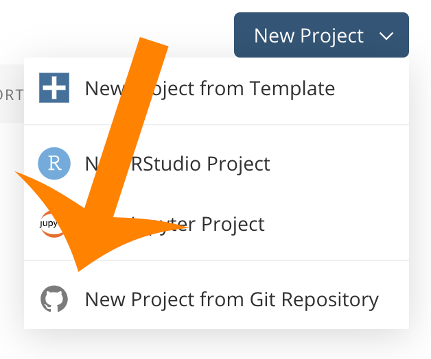
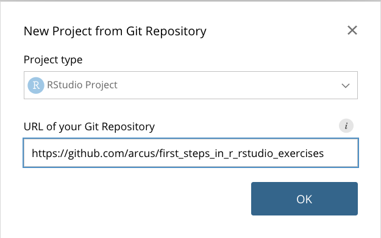
03:00
Create Your First Literate R Code!
This is what we’re going to do:
- Create a new Quarto Document
- Add a bit of description describing what you’re planning to do
- Add a “Code Chunk” doing the thing (in our case, installing
tidyverseandrmarkdown) - Run that code chunk to make sure it works
- Save that Quarto document as
setup.qmdin your Exercises folder.
Step 1: Create a New Quarto Document
- Go to File, New File, Quarto Document.
- Give it the title “Setup” and click “Create”.
- Try clicking on “Visual” and “Source” and scrolling up and down!
- You might get a “Visual mode” pop up box – give it a read.
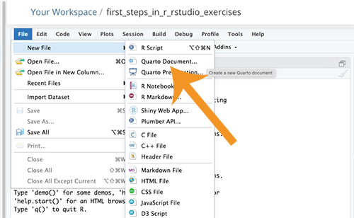
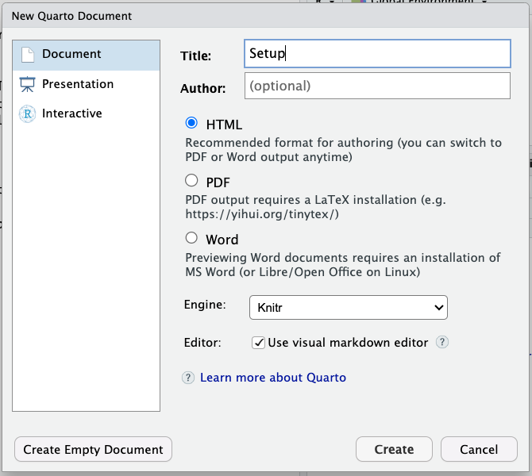
01:00
Step 2: Add a bit of description
- Remove the existing markdown and code
- Start a new header (“Installing Packages”) with two hash marks (#)
- Enter a blank line
- Then type a description of installing packages
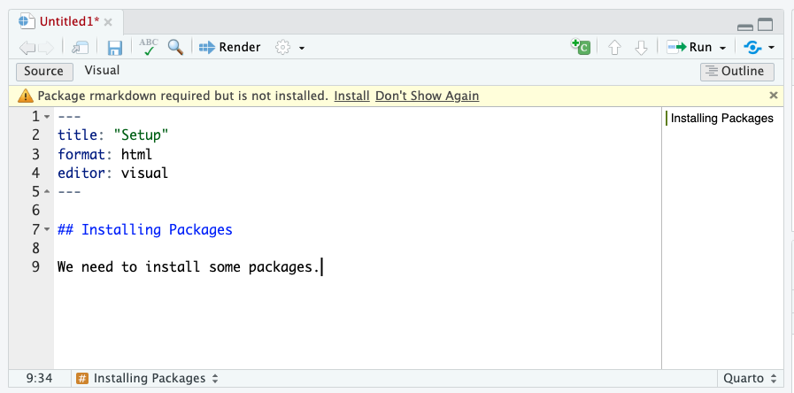
01:00
Step 3: Add a Code Chunk
- Position your cursor after your explanatory text
- Hit enter to make sure there’s a blank line
- Then use the green “+C” button to add a code chunk
- Inside that code chunk, type this, exactly:
install.packages(c("rmarkdown", "tidyverse"))
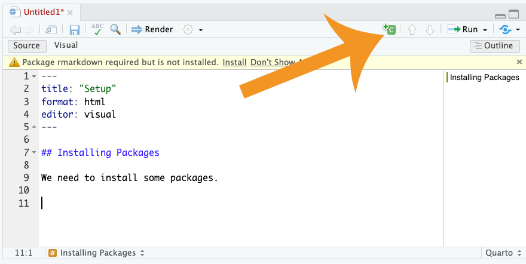
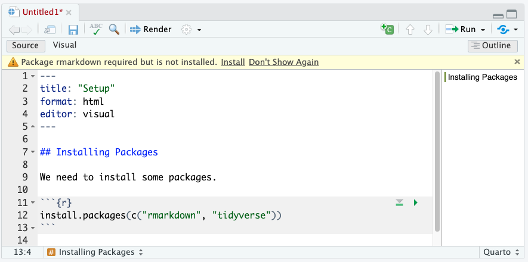
01:00
Step 4: Run that Code Chunk
- Use the green triangle (“Play” button) on the chunk to run the chunk
- Look in the “Console” for output. It will be verbose, and take a while.
- You’ll know it’s finished when the prompt
>appears in the Console and the Stop sign disappears!
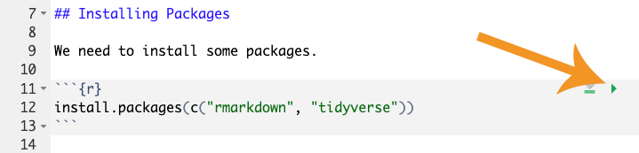
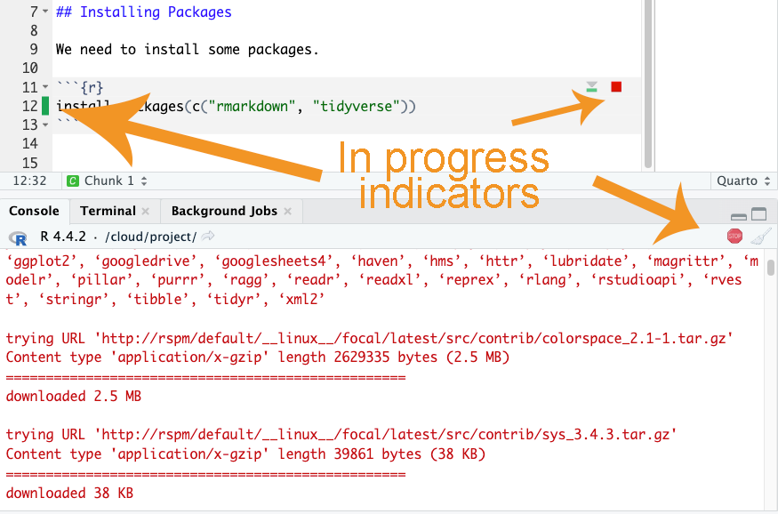
00:30
Step 5: Save that Quarto Document
- Click on File, Save
- Name your file “setup” (you don’t have to add “.qmd”, but you can!)
- Save it inside the “exercises” folder
00:30
Summary of Today
Today, you:
- Learned about R and RStudio
- Learned about Literate Statistical Programming
- Signed up for (or logged into) Posit.cloud
- Cloned (copied) our exercise files from GitHub into a new Project
- Installed the tidyverse package into that Project
That’s a lot! Give yourselves a round of applause.
Q&A / Was This Effective?
We like to measure our effectiveness (and analyze it in R!)
Goals:
- Use Source and Visual views in RStudio to experiment with how markdown gets rendered into attractive and descriptive text
- Create a new code chunk in a Quarto document
- Run a code chunk in a Quarto document
Next Session
Projects and File Ingestion
- File systems can be challenging to navigate
- Projects in RStudio
- Installing and loading packages
- Tabular data ingestion from .csv files
- Functions in R
Arcus Education, Children’s Hospital of Philadelphia